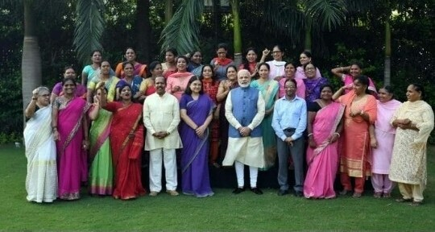

Shakira Ibrahim Sayyad is a dedicated Anganwadi worker, social worker and community contributor from Manerajuri, Taluka Tasgaon, District Sangli, Maharashtra. Throughout her journey, she has worked in the field of child development, education, women's welfare, health awareness and community development. Her achievements reflect her dedication towards society and her willingness to learn new skills
